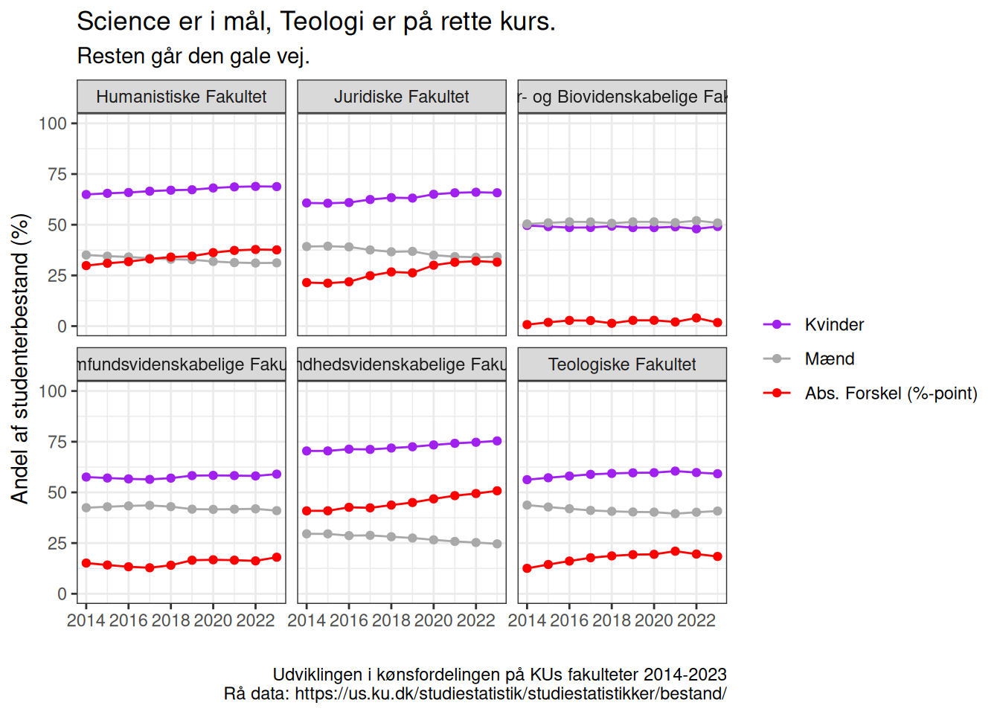
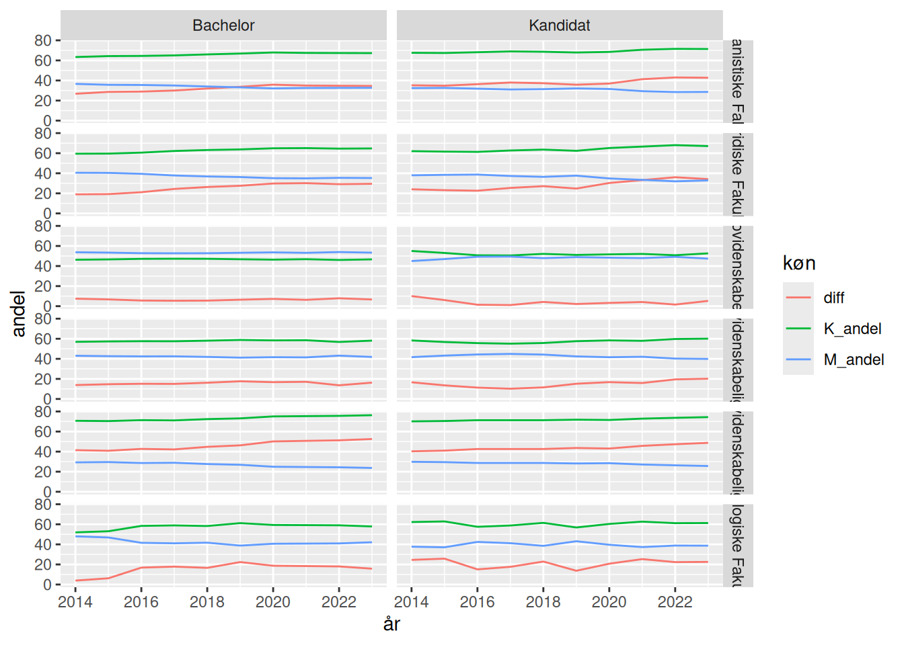

Kønsfordelingen på KU
Det går meget godt på Science. Resten… knap så godt
kategori 1
kategori 2
Hvis ligestilling i uddannelsessystemet handler om at der er lige mange af de to køn på uddannelserne, så har KU et problem:
Her opdelt på fakulteter. De røde linier illusterer forskellen i andel af kvinder og mænd. Jo højere den røde linie ligger, jo værre står det til. Hvis værdien er 0, er fordelingen 50-50. Hvis den bevæger sig op, går det tilbage med ligestillingen. Går den ned, går det fremad med ligestillingen. På alle fakulteter bortset fra det vi her i huset plejer at kalde “SCIENCE” er der ret massive ligestillingsproblemer. På teologi ser det ud til at spændet mellem de to køn indsnævres, altså bliver mere ligestillet. På de øvrige fire fakulteter går det tilbage med ligestillingen.
Nå. Men det handler jo om data.
KU offentliggør de kønsopdelte studenterbestandsdata på siden “https://us.ku.dk/studiestatistik/studiestatistikker/bestand/”.
De ligger som Excel-filer, og udmærker sig ved at have en del gentaget data. Først får vi de samlede tal for hele universitetet, både total og for bachelor og kandidatuddannelserne. Så får vi det totale tal, totalen for bacheloruddannelserne på et af fakulteterne, tallene for hver enkelt bacheloruddannelse, totalen for alle fakultetets kandidatuddannelser, og så tallene for hver enkelt kandidatudannelse for det pågældende fakultet. Det gentages for alle fakulteterne. Og så slutter vi søreme af med at få gentaget de første tre rækker i datasættet.
Sådan en fil er der for hvert år. Og for 2022 er der en fejl, hvor en af rækkerne gentages. Så først skal der hentes data, og så skal der ryddes op.
Vis koden
# Kilden til data
url <- "https://us.ku.dk/studiestatistik/studiestatistikker/bestand/"
# Stien hvor vi gemmer excel-filerne
data_sti <- "data/" # relativ til projektet
# indlæser siden med data
siden <- read_html(url)
# ekstraherer excel filnavne fra siden
excel_links <- siden %>%
html_nodes("a") %>%
html_attr("href") %>%
grep("\\.xlsx$", ., value = TRUE) %>%
basename()
# Disse filer har vi allerede
eksisterende_filer <- list.files(path = data_sti, full.names = FALSE)
# Ideen er at vi kan køre scriptet igen når der kommer nye data
# uden at hente de eksisterende filer igen.
filer_til_hentning <- base::setdiff(excel_links, eksisterende_filer)
# Funktion til at downloade excel filerne
# Hvorfor en funktion? Jeg vil kunne bruge den i en apply-funktion.
download_bestand <- function(x){
download.file(paste0(url, x), paste0("notes/20240816-sex-distribution-ucph/data/", x), mode = "wb")
}
# downloader excel filerne - hvis der er nogen der skal hentes.
if(length(filer_til_hentning)>0){sapply(excel_links, download_bestand)}Vi skal også have en funktion til at trække data ud af regnearkene.
Vis koden
# funktion til at ekstrahere data fra excelfilerne.
ekstraher_data <- function(fil){
data <- read_xlsx(fil) # indlæser fil
år <- names(data)[1] %>% str_extract("\\d{4}") # Året for data er gemt i filnavnet.
data %>%
rename(fag = 1) %>% # første kolonne har ikke et navn, men ender med at indeholde fag.
mutate(fakultet = case_when( # etablerer kolonne med fakultetsnavne
fag == "Københavns Universitet" ~ "Alle",
str_detect(fag, "Fakultet") ~ fag,
.default = NA
)) %>%
fill(fakultet, .direction = "down") %>% # fill-down - korrekte fakulteter på alle fag.
filter(fakultet != "Alle") %>% # alle data er vi faktisk ikke interesserede i.
filter(!str_detect(fag, "Fakultet")) %>% # Heller ikke totalerne for fakulteterne.
mutate(niveau = case_when(
fag == "Bachelor" ~ fag,
fag == "Kandidat" ~ fag,
.default = NA
)) %>%
fill(niveau, .direction = "down") %>% # samme øvelse som med fakulteterne for at få bac/kand
filter(!(fag %in% c("Bachelor","Kandidat"))) %>% # disse totaler skal vi heller ikke bruge
select(-Total) %>% # og total kolonne heller ikke - den er summen af de to køn.
mutate(år = as.numeric(år)) # og tilføj året.
}Den funktion bruger vi så på alle excelfilerne.
Vis koden
# ekstraherer data fra alle excelfilerne
data <- list.files(path = data_sti, full.names = TRUE) %>% as_tibble() %>%
mutate(data = map(value, ekstraher_data))Og så unnester vi, og pivoterer til et pænt langt dataformat.
Vis koden
# unnest data til langt format
data <- data %>%
select(-value) %>%
unnest(cols = data) %>%
pivot_longer(Kvinder:Mænd, names_to = "køn", values_to = "bestand")Og så har vi en fin dataframe med en række for hvert fag, med angivelse af år, fakultet og bac/kand-niveau. Og hvor mange mænd og kvinder der var på faget.
Det tillader os at beregne kønsfordelingen på de 6 fakulteter.
Vis koden
fak_data <- data %>%
pivot_wider(names_from = køn, values_from = bestand) %>%
mutate(samlet = Kvinder + Mænd) %>%
select(-fag) %>%
group_by(fakultet, år) %>%
summarise(Kvinder = sum(Kvinder),
Mænd = sum(Mænd),
samlet = sum(samlet)) %>%
ungroup() %>%
mutate(Kvinder = Kvinder/samlet*100,
Mænd = Mænd/samlet*100,
Diff = Kvinder - Mænd) %>%
select(-samlet) %>%
pivot_longer(cols = Kvinder:Diff, names_to = "køn", values_to = "andel")Og så kan der plottes. Vi har set resultatet ovenfor, men du kan folde koden ud herunder
Vis koden
fak_data %>%
ggplot(aes(år,andel, color = fct_relevel(køn, c("Kvinder", "Mænd", "Diff")))) +
geom_line() +
geom_point() +
theme_bw() +
ylim(c(0,100)) +
facet_wrap(~fakultet) +
ggtitle(label = "Science er i mål, Teologi er på rette kurs.",
subtitle = "Resten går den gale vej.") +
ylab("Andel af studenterbestand (%)")+
xlab("")+
theme(legend.title = element_blank()) +
scale_color_manual(values = c("Diff" = "red", "Kvinder" = "purple", "Mænd" = "darkgrey"),
labels = c("Diff" = "Abs. Forskel (%-point)", "Kvinder" = "Kvinder", "Mænd" = "Mænd")) +
labs(caption = "Udviklingen i kønsfordelingen på KUs fakulteter 2014-2023
Rå data: https://us.ku.dk/studiestatistik/studiestatistikker/bestand/")Det går ret meget tilbage med ligestillingen på SUND. Men er det et generelt forhold, eller er der variation? Lad os betragte opdelingen på niveauer. Det kunne jo være et udtryk for at det er helt galt på kandidaten - men at problemet er blevet taget alvorligt, og der derfor er en mere ligelig kønsfordeling¨ på vej. Det ville vi se hvis bacheloruddannelserne var ved at blive mere lige.
data %>% pivot_wider(names_from = køn, values_from = bestand) %>%
group_by(fakultet, niveau, år) %>%
summarise(K_tot = sum(Kvinder),
M_tot = sum(Mænd)) %>%
ungroup() %>%
mutate(K_andel = K_tot/(K_tot + M_tot)*100,
M_andel = 100 - K_andel,
diff = 2 * (K_tot / (K_tot + M_tot)) - 1,
diff = diff*100) %>%
mutate(diff = abs(diff)) %>%
mutate(color = factor(sign(diff))) %>%
pivot_longer(cols = K_andel:diff, names_to = "køn", values_to = "andel") %>%
ggplot(aes(år, andel, color=køn, group=køn)) +
geom_line() +
facet_grid(fakultet~niveau)`summarise()` has grouped output by 'fakultet', 'niveau'. You can override
using the `.groups` argument.